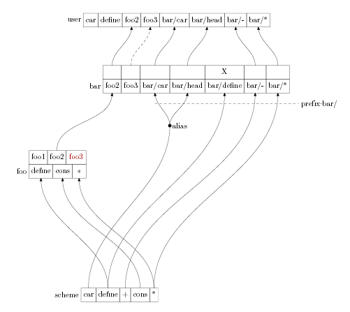
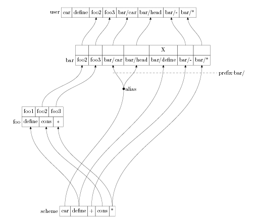

这里我们对 Scheme48 的模块操作进行一些实验。
首先，我们打开 Scheme48 的一个选项：
,set load-noisily
这样，加载模块，更改模块 interface 的时候，我们都会得到有益 的信息。
,config
(define-interface foo-interface (export foo1 foo2))
(define-structure foo foo-interface
(open scheme)
(files foo))
(define-structure bar
(export bar1 foo2 foo3 bar/car bar/head bar/cons bar/+ bar/-)
(open foo (modify scheme
(prefix bar/)
(alias (car head))
(hide cons)
(rename (+ -))
))
(files bar)
)
为了演示模块名字空间的各种操作，写的复杂一些。现在解释一下：
(export bar1 foo2 foo3 bar/car bar/head bar/cons bar/+ bar/-)
开放了一些名字。我们看到它把 foo 中的 foo3 也开放了。但是现 在 foo-interface 中只开放了 foo1 和 foo2，而没有开放foo3. 使 用 foo3 将会出错，以后我们会看到。
看看，现在的情况就是这个样子：

define-structure 只定义了接口，而没有定义具体的函数，我们使 用 (files foo) 和 (files bar) 让 Scheme48 在需要这些函数定义 的时候才打开文件。这是定义模块时通常都采用的方法。你也可以就 在 define-structure 里使用 (begin ...) 直接把函数定义在里面， 但是这种方法除了演示，几乎没有人使用。
好了，我们使用“正宗”的作法，编辑两个文件：foo.scm 和 bar.scm
foo.scm:
(define (foo1) (display "this is foo1")) (define (foo2) (display "this is foo2")) ;(define (foo2) (display "this is foo2, modified")) (define (foo3) (display "this is foo3"))
文件里 foo2 的两个定义，我们先把第二个注释掉。以后我们要换定 义时就把第一个注释掉，把第二个的注释符号删掉。
bar.scm:
(bar/define (bar1) (bar/display "this is bar1")) (bar/define (bar2) (bar/display "this is bar2"))
注意到，bar.scm 里使用的奇怪的名字 bar/define, 因为我们在 structure bar 的定义中，把 scheme 的所有名字都加上了前缀bar, 所以在 bar 的 package 中，没有 define 这种名字，只有 bar/define.
,user ,open bar
我们回到 user 空间，打开 structure bar。我们看到以下信息：
[bar bar.scm
Warning: Structure has undefined exports
#{Structure 177 bar}
(foo3 bar/cons bar/+)
]
提示我们： bar 想要输出的接口 foo3, bar/cons 和 bar/+ 没有定 义。这是因为：
以后我们会看到这些问题引起的结果。
我们首先来试一下 bar 开放的接口，语句下的注释是应该得到的输 出。
(bar/head '(a b c)) ; 'a (bar/car '(a b c)) ; 'a (eq? bar/head car) ; #t (eq? bar/car car) ; #t (eq? bar/car bar/head) ; #t
我们看到：
我们试一下一个没有开放的接口 bar/cdr, 结果出错：
(bar/cdr '(a b c)) ; Error: undefined variable ; bar/cdr ; (package user)
因为当前环境里没有 bar/cdr 这个函数。我们进入 bar package 再试一下：
,in bar (bar/cdr '(a b c)) ; bar> ; Error: undefined variable ; b ; (package bar)
还是出错，说 b 是没有定义的变量！怪事…… 再来：
,open scheme (bar/cdr '(a b c)) ; bar> Newly accessible in bar: (quote) ; bar> '(b c)
我们打开 scheme 之后，发现信息“Newly accessible in bar: (quote)”， 这说明我们上一个 (bar/cdr '(a b c)) 出错的原因是： bar 空间中 "quote" 没有定义 ！
回想一下，我们已经把 scheme 里的所有名字加了前缀 bar/ 啊！现 在 quote 应该叫做 bar/quote 我们再试试：
(bar/cdr (bar/quote (a b c))) ; bar> '(b c)
得到正确结果。原来如此！
(bar/cons 10 '(a b c)) ; Error: undefined variable ; bar/cons ; (package bar) (bar/+ 2 3) ; Error: undefined variable ; bar/+ ; (package bar) (bar/- 2 3) ; 5
解释：
我们首先试一下，bar 中开放的 foo package 里的函数 foo2:
(foo2)
; this is foo2#{Unspecific}
然后我们把 foo.scm 里的 foo2 函数的定义改成：
(define (foo2) (display "this is foo2, modified"))
接着运行：
,reload-package foo
(foo2)
; this is foo2, modified#{Unspecific}
我们看到我们只 reload 了 foo, 而没有 reload bar, 但是我们通 过 bar 访问 foo2 函数时，函数定义已经改变。
这说明 Scheme48 的名字解释具有即时性。这里，我们想要访问 foo2, Scheme48 就在当前环境里寻找 foo2, 发现 foo2 是 bar 开 放的一个接口，那么它就到 bar 里去找，然后发现 foo2 是 foo 里 开放的接口，于是它顺藤摸瓜找到 foo. 执行那里的函数。
这种机制似乎每一个函数调用都会费很多周折，会很慢。但是 Scheme48 采用了类似处理器里的 cache with cache invalidation， 不会费很多时间找到函数定义的。
我们来试一下，使用 foo 定义了却没有开放的函数 foo3：
(foo3) ; Error: undefined variable ; foo3 ; (package bar)
bar 里开放了 foo3, 但是 foo3 是 foo 定义的，foo 并没有开放 foo3。所以通过 bar 访问 foo3 是非法的。
那我们把 foo3 加到 foo 的开放接口中试试：
,config (define-interface foo-interface (export foo1 foo2 foo3)) ,user ; config> Newly accessible in bar: (foo3)
回到 user 空间，发现提示：bar 空间中可以访问新的名字 foo3.
(foo3)
; this is foo3#{Unspecific}
foo3 就可以使用了。
现在名字之间的关系就是这样：

从上面你可以看出我们把 foo-interface 独立出来定义的好处吗？ 我们值重新定义了 foo-interface，在里面加入了 foo3 接口，user 空间就自动看到了这个接口。
这避免了我们用 define-structure 重新定义 foo structure 的麻 烦。
分开定义 interface 还有一个好处就是：如果你的几个 structure 有相同的 interface, 你只需要写一次。
而且，把 interface 从 structure 的定义中分出去，代码会更加好 懂。你可以看看 bar 的 structure 定义中，interface 的部分占据 了大量地方，看起来很混淆。
我们试试 foo 里定义了，并且也开放了的函数 foo1 能不能使用：
(foo1) ; Error: undefined variable ; foo1 ; (package user)
不行。因为 foo 里的函数都是通过 bar 进入 user 空间的。而 bar 没有开放 foo1. 所以我们在 user 空间访问不到 foo1.
那我们打开 foo:
,open foo
; Newly accessible in user: (foo1)
(foo1)
; this is foo1#{Unspecific}
发现 foo1 可以访问了。
整个测试的代码可以在这里 下载。